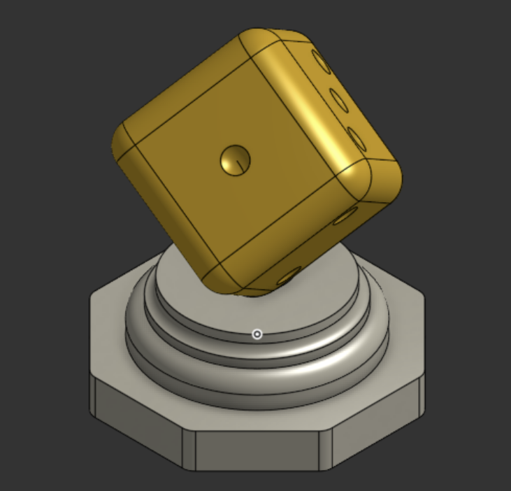

Fiche pour les collègues d'arts plastiques · TP n°2 de l'atelier CAO, 4e (technologie, codes 4e_C7.2 et 4e_C7.6) · fiche jumelle de la fiche pour les mathématiques
En technologie, l'élève de 4e construit dans Onshape un presse-papier : un socle octogonal surmonté d'une moulure obtenue par révolution, sur lequel il dresse un dé en équilibre sur un de ses coins. Il ne tape presque aucun nombre : toutes les cotes sortent de M = 89 mm et du nombre d'or φ, rangés dans des variables — et presque toutes retombent sur des nombres de la suite de Fibonacci.
Rien de cela n'est visible sur l'objet fini : c'est un code caché, à la manière des proportions qu'un peintre ou un architecte choisit sans les afficher. Cette fiche dit où sont ces codes, construit la spirale à partir des cotes réelles de l'objet, et propose des pistes — pour que vous décidiez ce que vous en faites : rien, un détour d'une séance, une co-intervention.
C'est la proportion du rectangle d'or : un rectangle dont on retire un carré laisse un rectangle de même proportion, plus petit. Sa définition exacte est φ = (1 + √5) ÷ 2, et sa propriété rare : φ² = φ + 1. On le croise dans l'histoire des arts — de la Divine proportion de Luca Pacioli (1509, illustrée par Léonard de Vinci) au Modulor de Le Corbusier (1950) — plus souvent comme choix revendiqué d'un artiste que comme loi cachée de la nature.
1, 1, 2, 3, 5, 8, 13, 21, 34, 55, 89… chaque nombre est la somme des deux précédents. Divisez un terme par le précédent : 89 ÷ 55 ≈ 1,618. Plus on avance, plus on s'approche de φ. C'est pour cela que, parti de 89, on retombe sur 55, puis 34, 21, 13, 8, 5 en divisant par φ. Le lien avec les spirales de tournesol ou de pomme de pin est réel (le nombre de spirales est souvent un terme de la suite) ; la « spirale de Fibonacci » tracée dans les carrés, elle, est une construction — et c'est celle que l'objet permet de tracer.
Chaque cote vient de M = 89 mm divisé par une puissance de φ. Le tableau donne la formule telle que l'élève l'écrit dans Onshape, la valeur calculée, et le nombre de Fibonacci sur lequel elle tombe.
| Élément de l'objet | Formule dans Onshape | Valeur | Fibonacci |
|---|---|---|---|
| Largeur du socle, d'un plat à l'autre | M | 89 mm | 89 |
| Arête du dé | C = M ÷ φ | ≈ 55,0 mm | 55 |
| Nombre de points creusés sur le dé | 1 + 2 + 3 + 4 + 5 + 6 | 21 | 21 |
| Épaisseur de la plinthe octogonale | Hsocle = M ÷ φ⁴ | ≈ 13,0 mm | 13 |
| Arrondi des arêtes du dé | Rde = C ÷ φ⁴ | ≈ 8,0 mm | 8 |
| Arrondi du socle · profondeur de la pointe dans le socle | Rsocle = Hsocle ÷ φ² · penetr = M ÷ φ⁶ | ≈ 5,0 mm (le même nombre, deux fois) | 5 |
| Profil de la moulure (deux arrondis, trois hauteurs) | 5, 3, 3 (cotes directes) | 5 mm et 3 mm | 5, 3 |
| Rayon du bas de la moulure | 35 (cote directe) | 35 mm ≈ 89 ÷ (2√φ) = 34,99 | ≈ 34, par le nombre d'or seulement |
Les valeurs sont celles de la fiche mathématiques, lues dans le modèle de référence (Onshape) et recalculées avec un noyau de CAO indépendant le 27/09/2026. Le dé est posé sur sa pointe par deux rotations (45°, puis 35,26°) : sa grande diagonale devient verticale et, vu de dessus, ses trois faces visibles dessinent un hexagone régulier.

Le socle (89) et le dé (55) donnent un rectangle de 89 × 55, presque d'or (89 ÷ 55 ≈ 1,618). On y découpe le plus grand carré possible, puis le suivant dans ce qui reste, et ainsi de suite : les carrés ont pour côtés 55, 34, 21, 13, 8, 5, 3, 2, 1, 1 — la suite de Fibonacci à l'envers — et ils remplissent le rectangle exactement (55² + 34² + 21² + … + 1² = 89 × 55 = 4 895). Un quart de cercle dans chaque carré, et la spirale apparaît.
Ce n'est pas tout à fait une spirale d'or (la vraie est logarithmique, et ses arcs ne sont pas des cercles) : c'est son approximation classique par quarts de cercle, celle que l'on trouve dans la plupart des manuels et des affiches. Le dire aux élèves évite une idée fausse fréquente.
D'après le programme d'arts plastiques du cycle 4 (BO spécial n°11 du 26/11/2015, modifié par le BO n°31 du 30/07/2020 ; version consolidée mise en ligne par l'académie de Nice).
| Question du programme | Point d'entrée | Ce que l'objet apporte |
|---|---|---|
| La représentation ; images, réalité et fiction | « La ressemblance : le rapport au réel et la valeur expressive de l'écart en art » ; « le dispositif de représentation : l'espace en deux dimensions (littéral et suggéré) » | Un objet en trois dimensions construit sur une proportion ; sa mise à plat (vue de dessus : octogone et hexagone emboîtés ; coupe de la moulure) ; la différence entre l'objet modélisé, son rendu doré à l'écran et sa version imprimée en plastique. |
| La matérialité de l'œuvre ; l'objet et l'œuvre | « L'objet comme matériau en art : la transformation, les détournements des objets dans une intention artistique » ; « le numérique en tant que processus et matériau artistiques » | Un dé — objet banal — détourné en presse-papier et dressé sur sa pointe ; un modèle numérique paramétré, où changer un nombre (M) refait tout l'objet dans la même proportion. |
| L'œuvre, l'espace, l'auteur, le spectateur | La présence de l'objet dans l'espace, le socle, le point de vue | Le socle mouluré « à l'antique » qui transforme l'objet en pièce exposée ; l'équilibre sur une pointe, qui attire le regard ; ce que voit le spectateur selon qu'il connaît ou non le code. |
Les compétences travaillées sont indiquées piste par piste, ci-dessous.
Chaque piste tient en une heure, se suffit à elle-même, et dit ce que l'élève fait. Elles sont rangées en progression : regarder l'objet, tracer sa spirale, composer avec sa règle, mettre en scène, prendre du recul. Une seule heure ? La piste 2.
L'élève photographie le presse-papier imprimé (ou prend la capture de cette fiche), le met à l'échelle sur un rectangle 89 × 55, puis trace la spirale par-dessus. Il entoure ce qui coïncide et ce qui ne coïncide pas.
L'élève construit lui-même, à la règle et au compas, le rectangle 89 × 55, ses dix carrés (55, 34, 21, 13, 8, 5, 3, 2, 1, 1) et les dix quarts de cercle, en suivant les six étapes de la fiche. Puis il pose un vrai dé ou l'objet imprimé sur son dessin.
L'élève compose une affiche ou une page de carnet dont tous les formats — marges, cadre, image, titre — sont pris dans la suite 89, 55, 34, 21, 13, 8, 5 (en mm ou en « carreaux »). Puis il refait la même page avec des nombres tirés au hasard. La classe compare les deux.
L'élève dessine (ou photographie, ou modélise) le même dé trois fois : posé à plat sur la table, sur sa pointe sans socle, sur sa pointe sur son socle mouluré. Il écrit sous chacun ce que l'objet « est » devenu.
À partir de deux dossiers d'images — des œuvres qui revendiquent la proportion (le Modulor de Le Corbusier, la Divine proportion de Pacioli) et des œuvres où on la cherche après coup (Parthénon, Joconde, coquillages) — l'élève classe, puis range le presse-papier dans la bonne colonne et justifie.
Le TP est déjà utilisé en EPI. Les trois disciplines y font chacune leur part, sur le même objet :
| Temps | Technologie | Mathématiques | Arts plastiques |
|---|---|---|---|
| 1 | TP n°2 dans Onshape : variables, moulure, dé posé sur sa pointe | φ, suite de Fibonacci, 89/55 (fiche maths, paliers « Variables ») | Piste 1 — superposer |
| 2 | Impression 3D du presse-papier (ou rendu) | Octogone, angles, solide de révolution | Piste 2 — tracer la spirale à l'échelle 1 |
| 3 | Changer M : tout l'objet suit, dans le rapport 1/φ | Agrandissement-réduction, rapport des longueurs et des volumes | Piste 3 — composer avec la même règle |
| 4 | Le cartel de l'objet : nom, cotes, matériau, masse | Masse volumique, bronze contre plastique | Pistes 4 et 5 — mettre en scène, prendre du recul |
| Fin | Production commune : une exposition des presse-papiers, chacun sur son dessin de spirale, avec son cartel — où l'élève écrit, en une phrase, le code que l'objet cache. | ||
Images/dsp_R9_presse_papier.png, origine et licence dans SOURCES_MEDIAS.md. La spirale est tracée dans la page (SVG), original, CC0.